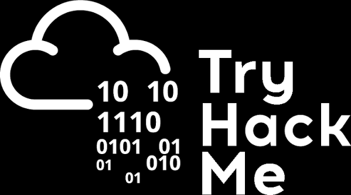
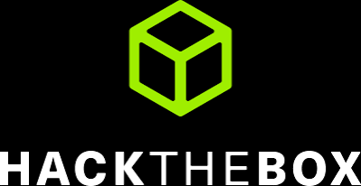

I am a 6th semester Computer Science student at Lahore Garrison University with a strong focus on network security and vulnerability assessment. I have been building real world defense systems and analyzing network infrastructures. I am actively seeking internships to apply my academic foundation to enterprise risk management and help safeguard data.
Experience & Labs
Offensive Security Training · TryHackMe

Practicing structured offensive security under the handle Kaos1417. Currently ranked in the Top 40% globally with 10 completed rooms spanning web exploitation, reconnaissance, and foundational security methodology.
Penetration Testing Labs · Hack The Box

Working through realistic enterprise lab environments: Active Directory attack chains, network pivoting, service enumeration, and exploitation in sandboxed settings.
Education
BS Computer Science · Lahore Garrison University
Currently in my 6th semester with a CGPA of 3.02. Focused on network security, operating systems, and applied AI.
Intermediate, Pre-Medical · Pakistan Scouts Cadet College Batrasi
Completed FSc Pre-Medical from BISE Abbottabad, scoring 78% (Grade A).
Matriculation, Science · Qazi Grammar Boys High School, Lahore
Scored 1074 / 1100 (97%) in the Science/Biology track from BISE Lahore.
Projects
Smart Hospital Network Security Architecture
Redesigned the network of Al-Shifa Smart Hospital, a fictional 600-bed tertiary-care facility that previously operated on a flat, unmanaged broadcast domain. The new architecture implements a HIPAA-aligned, three-tier hierarchical topology in Cisco Packet Tracer, deploying 12 isolated VLANs across a VLSM-subnetted 192.168.10.0/24 address space. OSPF Area 0 connects the main campus to a remote Branch Clinic over a serial WAN link. Security is enforced through Extended ACLs (GUEST_ISOLATION), NAT Overload (PAT), Port Security with sticky MAC learning, PortFast, BPDU Guard, and SSH-only management access. QoS for VoIP uses a dedicated Voice VLAN with MLS QoS CoS trust boundaries. EtherChannel (LACP) provides core-layer redundancy.
Smart-Pay: Secure Digital Wallet
A modern digital wallet application for personal financial management, built with ASP.NET Core, Entity Framework Core, and SQL Server. Features include JWT-powered stateless authentication, a real-time dashboard with balance overview and transaction history, seamless fund transfers to managed beneficiaries, and ACID-compliant database operations. The system enforces Role-Based Access Control (RBAC) with distinct User and Admin roles. The frontend is built with Tailwind CSS for a responsive experience across all devices.
CKD Prediction: ML Diagnostic System
A production-grade machine learning system for diagnosing Chronic Kidney Disease, reproducing and extending the methodology of Rahman et al. (2024). Evaluates five ensemble classifiers (Random Forest, Gradient Boosting, AdaBoost, Extra Trees, and XGBoost) across both RFE and Boruta feature selection schemes (10 experimental conditions). Uses a rigorous two-stage leakage-prevention splitting protocol and SVMSMOTE for class balancing. The best model (tuned Extra Trees, RFE, 12 features) is deployed as a Streamlit web app augmented by a Groq API / Llama3-8b natural-language explanation engine. Built on the UCI CKD dataset (400 records, 24 features).
EdTech WhatsApp Bot: Academic AI Assistant
A multi-agent, event-driven automation system built on n8n that turns WhatsApp into a unified academic assistant. Four orchestrated workflows handle the pipeline: an Ingestor polls Google Classroom every 15 minutes via OAuth2, caching active assignments in Redis; a Responder routes incoming WhatsApp messages through a Mistral Large LLM agent equipped with tools for homework retrieval, PDF document parsing, and end-to-end solution generation; a Solve Assignment workflow downloads PDFs from Google Drive, generates solutions, fills Google Docs templates, and exports formatted PDFs; and a Deadline Watcher proactively sends alerts 12 hours before due dates.
Certifications
-
Foundations of Cybersecurity
Google Cybersecurity Professional Certificate · Coursera -
Play It Safe: Manage Security Risks
Google Cybersecurity Professional Certificate · Coursera -
Connect and Protect: Networks & Network Security
Google Cybersecurity Professional Certificate · Coursera -
Tools of the Trade: Linux and SQL
Google Cybersecurity Professional Certificate · Coursera
Skills & Languages
Networking
Security Tooling
Platforms & Cloud
Programming
Languages
Beyond the Screen
Literature
Reading classical and philosophical literature. Dostoevsky's exploration of moral complexity, dystopian fiction, and psychological thrillers.
Visual Storytelling
Exploring visual storytelling through anime and manga. Drawn to intricate world-building, layered characters, and narratives that embrace moral ambiguity.